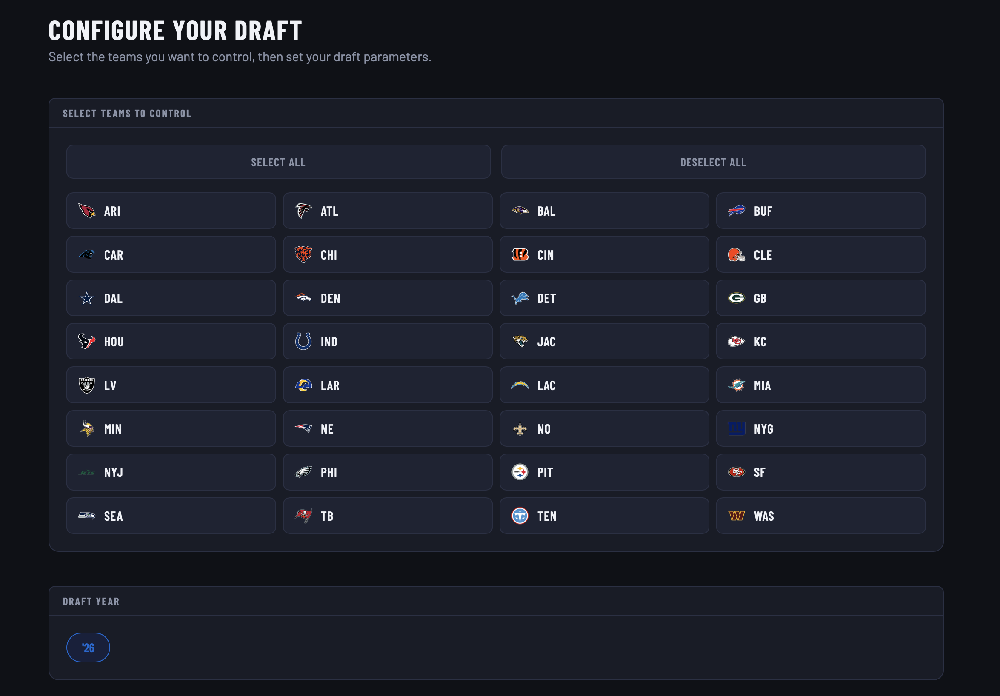

What is DraftSeason?
DraftSeason is a full stack Web App where users can run MockDraft simulations. Users can customize their draft experience by changing settings including the following:
- Teams Selected
- Number of Rounds
- Speed of Simulation
Here is a preview of the Home Page
